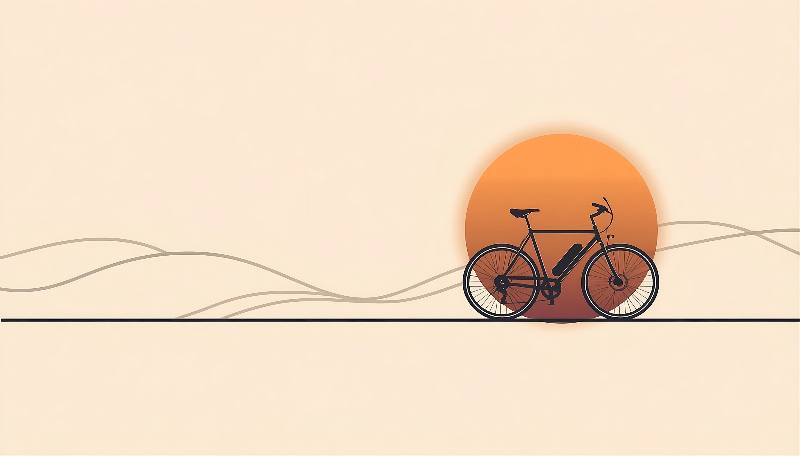
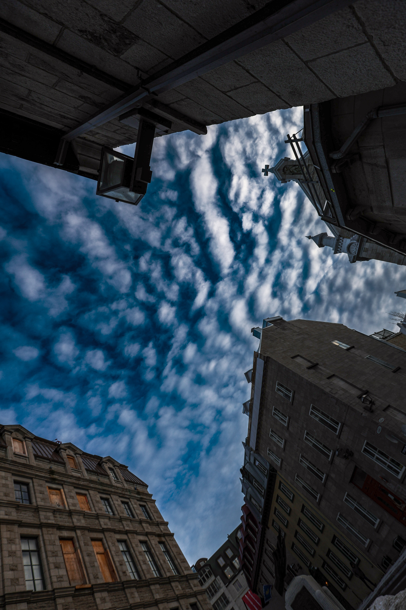

SKY RIFT TRAVEL

WELCOME TO
WHEELS
WITHOUT
BORDER

- 7 000 KM
- 0 $
- 1 NOMADE
- 1 VELO ELECTRIQUE
- 0 TRUQUAGE
De Québec à Mexico en vélo électrique et sous une tente. Un voyage d'une authenticité radicale pour redonner le sourire, provoquer l'entraide et confronter la réalité du monde à celle des écrans

Les images présentées ci-dessus constituent un aperçu de mon portfolio artistique et professionnel antérieur. Elles ne sont pas issues de l'expédition Québec-Mexico. Toutes les photographies et créations visuelles de ce site sont protégées par le droit d'auteur et restent ma propriété exclusive
L'AVENTURE BRUTE, SANS FILET DE SÉCURITÉ.

Portfolio artistique. Images non issues de l'expédition. © Copyright SkyRift. Tous droits réservés
À 26 ans, j'ai quitté le monde de la restauration pour capturer la vie à travers mon objectif. Mon moteur ? Refuser le conventionnel pour chercher l'humain dans ce qu'il a de plus vrai. Spécialisé dans le portrait artistique, je cherche à révéler la force et le réalisme de chaque visage, dans chacun des lieux que je découvre. Ce projet est le test ultime de cette philosophie, un défi logistique et physique hors norme. Pendant 3 mois et à travers 70 étapes, je m'élance seul dans une traversée continentale à l'état brut. Pas d'hôtels, pas de scénario, et absolument aucun argent en poche. Je pars littéralement en solitaire avec mes équipements photo, vidéo, mon vélo électrique et ma tente. C'est tout. Mon quotidien sera fait d'inconnu, de débrouillardise et de vulnérabilité. J'accepte la part de danger, les routes hostiles et l'imprévu total que réserve un tel périple.
UNE QUÊTE DE VÉRITÉ : VOIR LE MONDE DE SES PROPRES YEUX
Rien ne sera truqué, rien ne sera lissé. Je veux montrer l'aventure dans son vrai jus, avec ses moments de pure galère comme ses instants de grâce. Ce voyage est aussi une démarche d'investigation par le terrain : je pars vérifier si la réalité du monde correspond aux récits souvent anxiogènes des médias traditionnels et des réseaux sociaux. Sur ma route, je provoquerai des rencontres exceptionnelles. Je pars avec le désir profond de respecter chaque culture, de tendre la main à ceux qui en ont besoin, et de semer de la joie. Mon but est d'offrir un moment de bonheur, une étincelle de motivation, et de redonner le sourire à chaque personne croisée, ainsi qu’aux personnes qui suivront mes aventure, c’est à dire, vous ! Je veux prouver que la bonté humaine existe partout et que le voyage reste accessible à quiconque a l'audace de se lancer.

Portfolio artistique. Images non issues de l'expédition. © Copyright SkyRift. Tous droits réservés

Portfolio artistique. Images non issues de l'expédition. © Copyright SkyRift. Tous droits réservés
UN STUDIO NOMADE : CRÉEZ AVEC MOI SUR LA ROUTE.
Je voyage sans argent, mais pas sans ressources. Tout au long de ces 7 000 km, je mets mon expertise visuelle au service du terrain. Je propose mes services de photographe et vidéaste pour des productions artistiques avec toutes les personnes inspirantes qui croiseront ma route.
Avis aux restaurants, cafés, auberges et entreprises locales sur mon itinéraire : n'hésitez pas à me contacter. Créons ensemble du contenu visuel percutant, des portraits uniques ou des vidéos promotionnelles pour vos établissements en échange d'un repas, d'un abri ou d'une recharge de batterie. Un long-métrage documentaire sans filtre sortira également à la fin du périple pour retracer l'intégralité de cette immersion.

Portfolio artistique. Images non issues de l'expédition. © Copyright SkyRift. Tous droits réservés

Portfolio artistique. Images non issues de l'expédition. © Copyright SkyRift. Tous droits réservés

Portfolio artistique. Images non issues de l'expédition. © Copyright SkyRift. Tous droits réservés

Portfolio artistique. Images non issues de l'expédition. © Copyright SkyRift. Tous droits réservés

Portfolio artistique. Images non issues de l'expédition. © Copyright SkyRift. Tous droits réservés

Portfolio artistique. Images non issues de l'expédition. © Copyright SkyRift. Tous droits réservés

Portfolio artistique. Images non issues de l'expédition. © Copyright SkyRift. Tous droits réservés